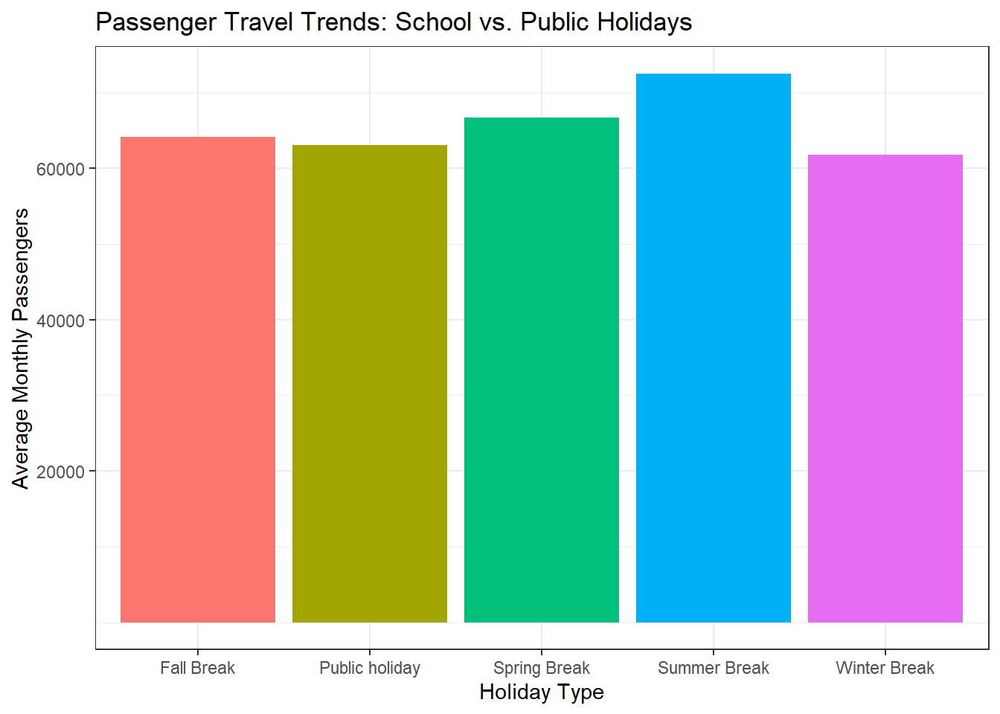
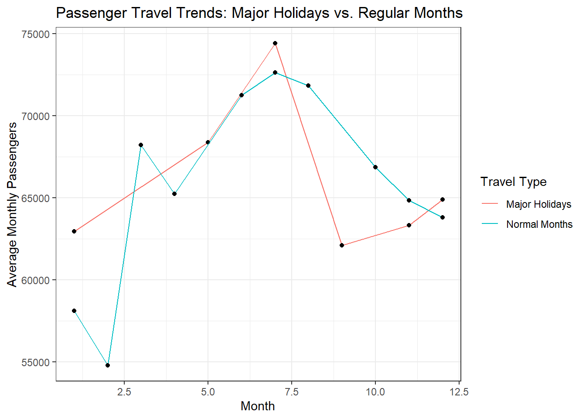

── Attaching core tidyverse packages ──────────────────────── tidyverse 2.0.0 ──
✔ dplyr 1.1.4 ✔ readr 2.1.5
✔ forcats 1.0.0 ✔ stringr 1.5.1
✔ ggplot2 3.5.1 ✔ tibble 3.2.1
✔ lubridate 1.9.4 ✔ tidyr 1.3.1
✔ purrr 1.0.2
── Conflicts ────────────────────────────────────────── tidyverse_conflicts() ──
✖ dplyr::filter() masks stats::filter()
✖ dplyr::lag() masks stats::lag()
ℹ Use the conflicted package (<http://conflicted.r-lib.org/>) to force all conflicts to become errors
Rows: 44393 Columns: 5
── Column specification ────────────────────────────────────────────────────────
Delimiter: ","
chr (5): ADM_name, ISO3, Date, Name, Type
ℹ Use `spec()` to retrieve the full column specification for this data.
ℹ Specify the column types or set `show_col_types = FALSE` to quiet this message.
Rows: 7242 Columns: 7
── Column specification ────────────────────────────────────────────────────────
Delimiter: ","
chr (1): ISO3
dbl (6): Year, Month, Total, Domestic, International, Total_OS
ℹ Use `spec()` to retrieve the full column specification for this data.
ℹ Specify the column types or set `show_col_types = FALSE` to quiet this message.Passenger Trend between School and Public Holidays
Data Description
The data source for the data I will be exploring, Global Holidays and Travel, comes from the article “Global holiday datasets for Understanding seasonal human mobility and population dynamics” by Shengjie Lai (et al). tidytuesday/data/2024/2024-12-24/readme.md at main · rfordatascience/tidytuesday.
The data is accessible though the WorldPop project and through Github. The Global Holiday Dataset contains structured data based on public and school holidays along with the airline passenger statistics. The variables are broken down as followed:
global_holidays.csv
ADM_name (string)
ISO3 (String)
Date (date)
Name (String)
Type (String)
monthly_passengers.csv
ISO3 (String)
Year (integer)
Month (integer)
Total (double)
Domestic (double)
International (double)
Total_OS (double)
Research Questions:
- Do school holidays influence travel patterns more than public holidays?
- How do passenger numbers oscillate around major U.S holidays?
- Do certain states or cities experience a greater travel surge on specific holidays?
Data Cleaning
Since I wanted to keep my data narrow and clean, I first determined I wanted to focus on U.S holidays and passenger data, so I filtered out the US by its abbreviations. Additionally since I noticed both data sets did not have matching variables for dates I went ahead and manipulated the date of the global_holiday to better be accommidated with the month and year variables of the monthly passenger dataset. As for the monthly passenger dataset the only cleaning I did was filtering only the US passenger data to keep my data the same.
Data Cleaning and Preparation
# A tibble: 102 × 7
ADM_name ISO3 Date Name Type Year Month
<chr> <chr> <date> <chr> <chr> <dbl> <dbl>
1 Us USA 2010-01-18 Martin Luther King Jr. Day Public holi… 2010 1
2 Us USA 2010-02-15 Presidents' Day Public holi… 2010 2
3 Us USA 2010-05-31 Memorial Day Public holi… 2010 5
4 Us USA 2010-07-04 Independence Day Public holi… 2010 7
5 Us USA 2010-07-05 Independence Day observed Public holi… 2010 7
6 Us USA 2010-09-06 Labor Day Public holi… 2010 9
7 Us USA 2010-10-11 Columbus Day Public holi… 2010 10
8 Us USA 2010-11-11 Veterans Day Public holi… 2010 11
9 Us USA 2010-11-25 Thanksgiving Day Public holi… 2010 11
10 Us USA 2010-12-24 Christmas Day observed Public holi… 2010 12
# ℹ 92 more rowsSince there was no recognized school holidays, as every school districts have their own calenar system, I chose to make a list of the most notable school break and vaugly when they are present or “celebrated”Since there was no recognized school holidays, as every school districts have their own calendar system, I chose to make a list of the most notable school break and vaugely when they are present or “celebrated”
Explanation:
I wanted to focus on filtering the data I will mainly be working with such as working only with US based holiday data to connect it to relevant flight patterns. Additionally since I want to be comparing the flight patterns and how whether public or school holidays create a greater surge of passengers I decided to filter out the public holidays. As every school district follows a different calendar systems and may have unique holidays, I decided to make a list of the four major schools breaks that students may experience. As stated before since schools have dfferent calendars I decided to be vague on wen these breaks occur, an not focus on specifics since every school have different academic calendars.
Travel Trends by Holiday Type
Based on the travel trends of school breaks and public holidays, by finding the average of the the geaph showcas
Warning: There was 1 warning in `summarize()`.
ℹ In argument: `across(c(Total, Domestic, International, Total_OS), mean, na.rm
= TRUE)`.
ℹ In group 1: `Holiday_type = "Fall Break"`.
Caused by warning:
! The `...` argument of `across()` is deprecated as of dplyr 1.1.0.
Supply arguments directly to `.fns` through an anonymous function instead.
# Previously
across(a:b, mean, na.rm = TRUE)
# Now
across(a:b, \(x) mean(x, na.rm = TRUE))Travel Trend
By specfically choosing to focus on the months typical school breaks occur in we can bridge the gap in missing data for registered school holidays. The schools breaks are categories per their respective month while public holidays are everything else that is not in the respective month of the school breaks. The graph depict a visual of the average monthly passengers per school break or holiday. It seems as though during summer break there is an increase of passengers. Apart from winter break it does seems that school breaks have an influence on how many people choose to travel.

How Passenger Numbers Fluctuate Around Major U.S Holidays
Solely focusing on the most major holidays celebrated in the U.S we can determine the average passengers that traveled. Additionally choosing to not include the day after or before was a choice made to be able to determine how many travel the day of the major holiday.
By excluding the major holidays celebrated in the United States then well will be able to obtain the average or normal rate of passengers traveled.
Now comparing the normal travel trend with the major holiday trend to see how many travel the day of and how it compares to the other days. There are certain peaks on the graph indicating a major holiday showed an increase in passengers on flights. With the highest peak being around July we can assume fourth of July is a holiday in which many choose to travel, it is also during the summer which reinforces the idea of the previous graph, summer being a popular time to travel.
